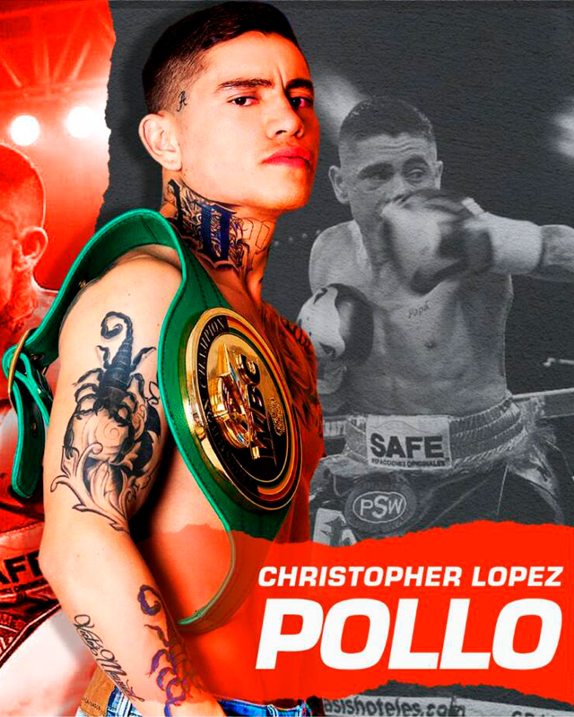

← Nuestros peleadores
Cristopher López · Pollo

Guadalajara, Jalisco · 22-0-2, 13 KO’s
De infancia difícil, que forjó su carácter implacable en la Perla Tapatía, el invicto Cristopher ‘Pollo’ López buscó en el boxeo una forma de evitar malas compañías pero también de ganar dinero para apoyar en casa; de estilo agresivo desde sus primeros combates conquistó el gusto de los fanáticos; dando cuenta con apenas un puñado de combates de los contendientes mundialistas Franklyn Manzanilla de Venezuela y Dixon Flores de Nicaragua; además de noquear al panameño Edgar Valencia, el invicto colombiano Edwin Barrios y el argentino Pablo Ariel Gómez, además de una victoria sobre el ex campeón mundial Hernán ‘Tyson’ Márquez que lo ha catapultado en las clasificaciones de la división gallo, misma que decidió invadir tras un largo campamento en Tokio, Japón; junto al sensacional Naoya Inoue.